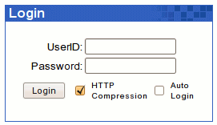

| To login to your webmail, open a
web browser
, such as
Internet Explorer and type in the URL (
Uniform Resource Locator
) into the address bar. For example, if your website address is www.yourdomain.com, your access to webmail will be www.yourdomain.com/webmail or www.yourdomain.com/openwebmail. However, this is not necessarily true in all situations. If you cannot find your webmail login, please contact your
system administrator
for more help.
(Example: http://www.pdcweb.net/webmail)
Once you have found Open Webmail, you will be greeted with a login screen the same or similar to the following example:
|
 | Type your User Name (or ID) in the text field beside UserID:, and your password in the text field beside Password:.
Note: Your user name is not necessarily the same as your e-mail address. If you do not know your user name, please contact your system administrator. |
On the
PDCweb Network
your e-mail address, username, and aliases are all valid UserID's.
Example:
| Domain: | www.muppetlabs.com |
| Email: | bunson@muppetlabs.com |
| UserID: | bhoneydew |
| Password: | Burner |
This user can log into his webmail with a UserID of bunson or bhoneydew.
If you like, you can click the checkbox next to "Auto
Login". When this feature is enabled, you may login into Open Webmail
without typing username/password if you didn't do logout in your
previous Open Webmail session and that session is not timed out. However,
others may also auto login into your Open Webmail account with this
computer, so please DO NOT enable this feature on a public computer.
HTTP Compression can reduce the use of network bandwidth
between your computer and the webmail server effectively, but there can
be some compatibility issues. So if you encounter any problem, please
login again with this checkbox unchecked.
Once you have entered both of these fields, you can click "Login",
or hit the "Enter" key on your keyboard. If you entered your correct
UserID and Password, you will be directed to your Inbox.
If it is your first time logging into Open Webmail, you will be taken to your settings configuration. Please see
Basic Settings Configuration
. If you have already configured your settings skip ahead to
Using Your Inbox
. |